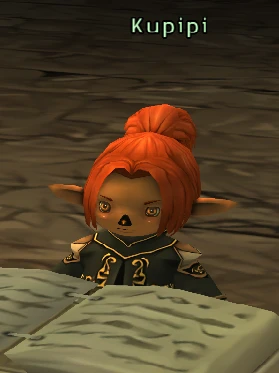
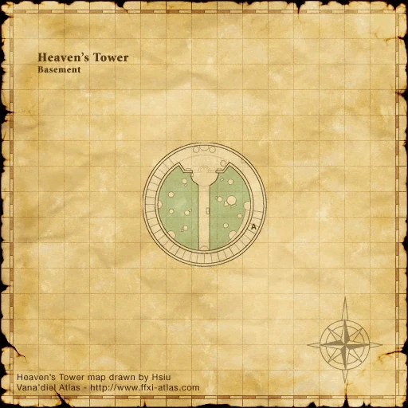
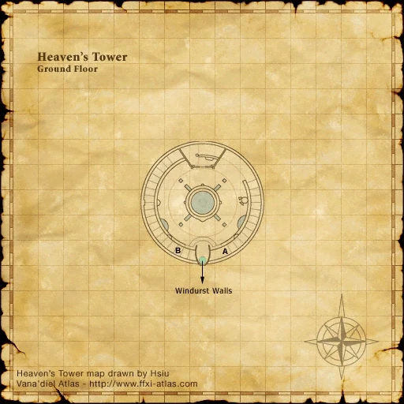
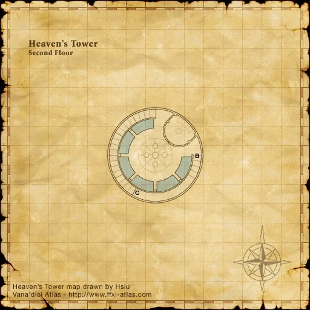
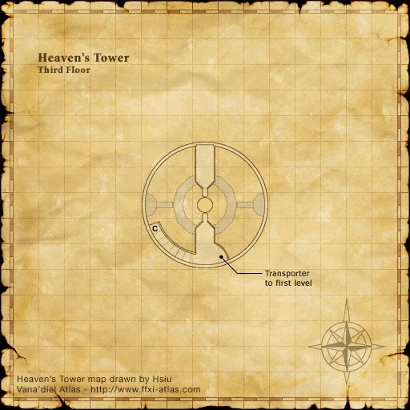

Before you begin
Be allied with Windurst, have Rank 3, and finish the preceding required story steps. Raise Rank Points if the mission is not offered.
People in this mission


Walkthrough
- Accept the mission and speak with Zubaba on Heavens Tower’s second floor for the Charm of Light.
- Enter Inner Horutoto through Lily Tower, pass Beetles Burrow (D-10), and reach the Three Mage Gate in Rose Tower (H-9).
- Use the gate with White Mage, Red Mage and Black Mage assistance, or your existing Portal Charm. An unlocked Toraimarai Canal route is another approach.
- Examine the Gate of Light on Rose Tower map 2 (G-7).
- Return to Zubaba.
Important notes
- After the first completion, trading a Rolanberry to Kupipi obtains a Portal Charm.
- Optional for rank progression. Repeat or later-rank variants request three Rusty Daggers instead; follow Zubaba’s current assignment.
Locations and references
| Place / NPC | Location | Reference |
|---|---|---|
| Three Mage Gate | Inner Horutoto, Rose Tower (H-9) | Location reference |
| Gate of Light | Rose Tower map 2 (G-7) | Location reference |
Completion and reward
Rank Points
Area maps
Open a zone below, then select a map to enlarge it. Match the named floors and grid coordinates in the steps; these are reference area maps, not a live position tracker.
Heavens Tower












Toraimarai Canal


References
HorizonXI Wiki: Windurst 3-2 · LandSandBoat mission definition
The route summary covers the original story. Other servers’ extra rewards, level-cap settings and Trust rules are not promises of Zenith behavior. Confirm battlefield entry conditions in game.
Additional level-75 reference
|
Walkthrough
Accept the Mission
- This Mission may be skipped. Be sure to turn in enough Crystals to be able to get the next Mission if you choose to skip this one.
- If you've skipped this Mission, moved up in Rank, and now wish to complete it, see the Notes below.
- Accept the Mission from the Gate Guard and then go to Heavens Tower.
- Head up to the second floor and talk to Zubaba to get a necessary Charm of Light Key Item.
- Gather a group that includes a Black Mage, White Mage, and Red Mage OR someone that has done this Mission before and has obtained the Portal Charm. It is best to have a party of level 30+ so that you can handle the aggro (or you can try to Sneak/Invisible yourselves through)
- Once you have your group gathered head out to the Lily's Tower which is in East Sarutabaruta at J-7.
- If you have unlocked Toraimarai Turmoil quest, just enter Toraimarai Canal from Windurst Walls. You will need sneak to get through the map (there is 1 room that requires invisible but if you take the right route you won't encounter any beetles).

Three Mage Gate
- Go to the small room at G-8 and through the Cracked Wall on the north side of the room.
- Make your way to E-10 and go through the Magical Gate of Horutoto there.
- Continue straight west to a Cracked Door at D-10 and go through to the next area.
- Follow the path to the large room at H-9. You'll find the Sealed Portal on the north side of the room. In front of this door are 3 circles on the floor - a whitish one, blackish one, and reddish one. This is the Three Mage Gate.
- To open the gate have your Black Mage stand on the dark circle, White Mage on the light one, and Red Mage on the reddish one. They will begin to glow and the door will open. If you brought someone who has the Portal Charm, they just need to click on the door to open it.
- Everyone needs to head through quickly - when the door closes, thats it. It cannot be re-opened from the inside.
- Follow this passage a few steps to a round room with two hallways - one to the north-east, and one to the north-west. It doesn't matter which one you take - they'll both lead to the same place. They look like dead ends, but they're just false walls. Walk right through the wall at the end of the tunnel to find yourself in a room full of Wendigos and Battle Bats.
- Head over to the small room in G-7 (the northern room) and click on the Gate of Light for a cut-scene.
- You can get back to the Three Mages Gate by walking into the glowing light on the platform in the east room at H-6. From here you can make your way back through the ruins the same way you came. Otherwise if you want, you can use Instant Warp Scrolls if you brought them.
- Go back to Heavens Tower and talk to Zubaba again.
Notes
- To get the Portal Charm, trade a Rolanberry to Kupipi. You must have completed this mission to receive the Charm.
- If you're repeating this quest or doing it after you skipped it the first time (and have moved up in rank since skipping) it is a bit different:
- After accepting the Mission, go speak to Zubaba. She will only require 3 Rusty Daggers to prove you were there. You can either buy these from the AH, or actually go farm them - she doesn't care.
- Trade the 3 Rusty Daggers to Zubaba and the Mission is complete (Trade a rolanberry to Kupipi to get the charm).
Game Description
- Mission Orders
- On the command of Zubaba, the head lady-in-waiting, you are to journey beneath the central magic tower of the Horutoto Ruins. There, you are to report to the facility managed by Heavens Tower, which protects the talisman that seals Castle Zvahl. Render whatever assistance is necessary.
Adapted from Eden Wiki: Written in the Stars · Contributors and history · CC BY-SA 4.0. Revision 8552. Layout, links and optional background text adapted for Zenith.